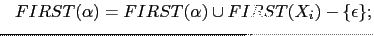
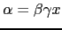
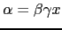
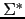
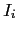
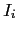
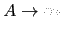

Sig: Construcción de las Tablas Sup: Análisis Sintáctico Ascendente en Ant: Ejemplo en Jison: Calculadora Con:
jison entran en la categoría de analizadores
LR. Estos analizadores construyen una derivación a derechas inversa
(o antiderivación).
De ahí la R en LR (del inglés rightmost derivation). El árbol sintáctico
es construido de las hojas hacia la raíz, siendo el último paso en la antiderivación
la construcción de la primera derivación desde el símbolo de arranque.
Empezaremos entonces considerando las frases que pueden aparecer en una derivación a derechas. Tales frases consituyen el lenguaje de las formas sentenciales a rderechas :

Donde la notacion RM indica una derivación a derechas (rightmost). Los elementos de se llaman ``formas sentenciales derechas''.
Dada una gramática no ambigua
y una frase
 el proceso
de antiderivación consiste en encontrar la última derivación a derechas que dió lugar a
el proceso
de antiderivación consiste en encontrar la última derivación a derechas que dió lugar a
 . Esto es, si
. Esto es, si
 es porque existe una derivación a derechas de la forma
es porque existe una derivación a derechas de la forma
El problema es averiguar que regla
 se aplicó y en que lugar
de la cadena
se aplicó y en que lugar
de la cadena  se aplicó. En general, si queremos antiderivar
una forma sentencial derecha
se aplicó. En general, si queremos antiderivar
una forma sentencial derecha
 debemos averiguar por que regla
debemos averiguar por que regla
 seguir y en que lugar de la forma (después de  en el ejemplo)
aplicarla.
seguir y en que lugar de la forma (después de  en el ejemplo)
aplicarla.
La pareja formada por la regla y la posición se denomina handle, mango o manecilla de la forma. Esta denominación viene de la visualización gráfica de la regla de producción como una mano que nos permite escalar hacia arriba en el árbol. Los ``dedos'' serían los símbolos en la parte derecha de la regla de producción.
Si dispusieramos de un procedimiento que fuera capaz de identificar el mango,
esto es, de detectar la regla y el lugar en el que se posiciona, tendríamos un
mecanismo para construir un analizador.
Lo curioso es que, a menudo es posible encontrar un autómata finito que
reconoce el lenguaje de los prefijos
 que terminan
en el mango. Con mas precisión, del lenguaje:
que terminan
en el mango. Con mas precisión, del lenguaje:
Esto es, es el lenguaje de los prefijos viables es el
conjunto de frases que son prefijos de
 ,
siendo una forma sentencial derecha (
,
siendo una forma sentencial derecha (
 ). Los
elementos de
). Los
elementos de  se denominan prefijos viables.
se denominan prefijos viables.
Obsérvese que si se dispone de un autómata que reconoce
 entonces se dispone de un mecanismo para investigar el lugar y
el aspecto que pueda tener el mango. Si damos como
entrada la sentencia
a dicho autómata, el autómata aceptará la cadena
entonces se dispone de un mecanismo para investigar el lugar y
el aspecto que pueda tener el mango. Si damos como
entrada la sentencia
a dicho autómata, el autómata aceptará la cadena
 pero rechazará
cualquier extensión del prefijo. Ahora sabemos que el mango
será alguna regla de producción de
pero rechazará
cualquier extensión del prefijo. Ahora sabemos que el mango
será alguna regla de producción de  cuya parte derecha
sea un sufijo de
cuya parte derecha
sea un sufijo de
 .
.
Conjunto de Estados:

La notación
 denota la longitud de la cadena
denota la longitud de la cadena
 .
En vez de la notación
.
En vez de la notación
 escribiremos:
escribiremos:
 ,
donde la flecha ocupa el lugar indicado por el número
,
donde la flecha ocupa el lugar indicado por el número
 :
:
Denotaremos por  a este autómata. Sus estados se denominan
 . La idea es que este
autómata nos ayuda a reconocer los prefijos viables
. La idea es que este
autómata nos ayuda a reconocer los prefijos viables  .
.
Una vez que se tiene un autómata que reconoce los prefijos viables es posible construir un analizador sintáctico que construye una antiderivación a derechas. La estrategia consiste en ``alimentar'' el autómata con la forma sentencial derecha. El lugar en el que el autómata se detiene, rechazando indica el lugar exacto en el que termina el handle de dicha forma.
|
S
|
|
S
|
El lenguaje generado por esta gramática es
 Es bien sabido que el lenguaje
Es bien sabido que el lenguaje  no es regular.
La figura 4.1 muestra
el autómata finito no determinista con
no es regular.
La figura 4.1 muestra
el autómata finito no determinista con  -transiciones
(NFA)
que reconoce los prefijos viables de esta gramática, construido
de acuerdo con el algoritmo 4.4.4.
-transiciones
(NFA)
que reconoce los prefijos viables de esta gramática, construido
de acuerdo con el algoritmo 4.4.4.
Véase https://github.com/crguezl/jison-aSb para una implementación en Jison de una variante de esta gramática.